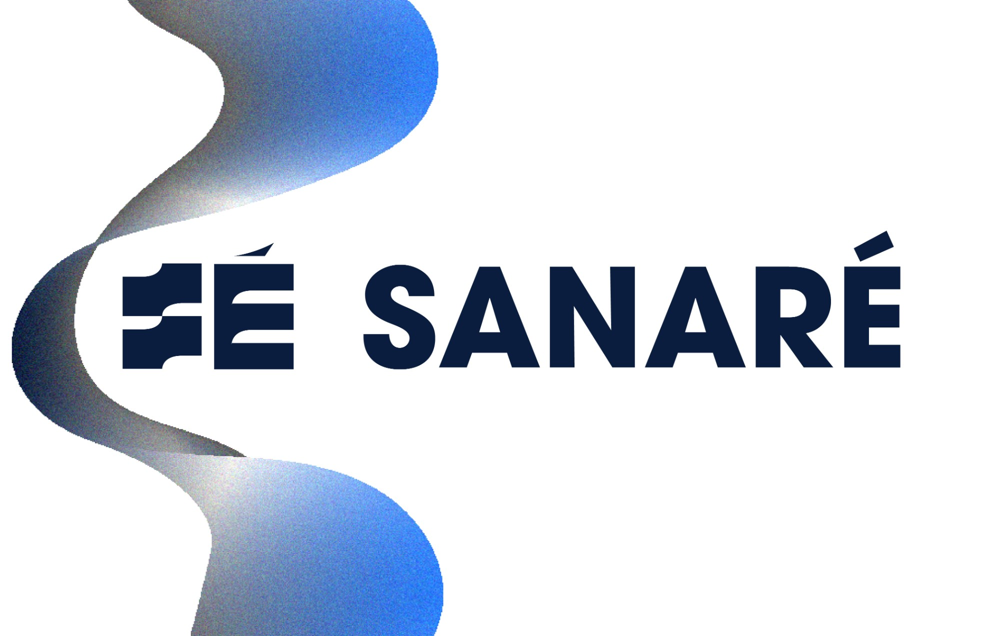

Design.
Brands, posters, print, apparel, and product photography. Select any image to see it larger.
The product photos come from my independent Etsy design shop, which is still open although I'm not actively working on it right now. SEO work raised its listing views by 500%, and I've fulfilled 64 orders at a five-star rating.
Featured · Brand identity · 2026
Sanaré
I designed the brand identity for Sanaré, a Canadian medtech company building a sensor-integrated knee sleeve for ACL recovery. I developed the mark to read as clinical instrumentation to care teams and as an everyday wearable to patients, then extended it into an animated identity, which is a case study on the Work page.

Gallery
“Design Is Not For Sale”: cover of a design manifesto booklet, April 2026. Manifesto booklet: opening spread. Ornamental pattern poster, indigo colorway. Ornamental pattern poster, green colorway. Information-design poster setting all thirty articles of the UN Declaration of Human Rights. Experimental type poster built from layered and rotated letterforms: Only Monsters. Manifesto booklet: “Every word, color, image.” Manifesto booklet: back cover. Type specimen poster for Didot. Typographic poster, Surah Al-Ankabut, verse 64. Sanaré monogram, white on navy gradient. Tones + Textures logo, orange version. Tones + Textures wordmark. Tones + Textures logo, circular version. Welcome card for the Tones + Textures shop. Campaign graphic: HQA Spring Ramadan fundraiser, 2024–25. Campaign graphic: donation call to action with QR code. Event announcement graphic for HQA Spring. Social media graphic for HQA Spring. Coffee & Matcha cup logo. Coffee & Matcha lettering logo. Coffee & Matcha banner. Tala's Little Shoppe icon logo. Business card for Tala's Shoppe. Banner for Tala's Shoppe. Thank-you card design. Thank-you card design, version two. Crochet Club logo. Crochet Club banner. Social graphic: ways to hold your yarn. Crochet Club tee mockup, front. Crochet Club tee mockup, back. Youth Culture Club logo. T-shirt mockup, front. T-shirt mockup, back. Senior 2026 design. Senior tee mockup, front. Senior tee mockup, back. Test shot for the Sit A While Arabic coffee campaign: cup on saucer. Test shot for the Sit A While campaign: cup and glass before a curtain. Test shot for the Sit A While campaign: overhead. Product photo: charm bracelet. Product photo: pearl charm bracelet. Product photo: blue bead charm bracelet. Product photography: charm keychain. Product photo: star charm keychain. Product photo: charm keychain on a tray. Product photography: beaded bracelet. Product photo: green leaf bracelet. Product photo: leaf bracelet on satin. Product photo: green bead bracelet. Product photo: green bead bracelet on a tray. Product photo: cherry bracelet. Product photo: cherry bracelet on satin. Product photo: pink flower bracelet. Product photo: floral bracelet. Product photo: floral bracelet on a tray. Product photo: star earrings. Product photo: bee earrings. Product photo: bee earrings on satin. Product photo: gold earrings. Product photo: bakery sticker tin. Product photo: croissant stickers. Product photography: bakery sticker tin. Product photo: pastry stickers. Product photo: dessert stickers. Product photo: coffee sticker tin. Product photo: coffee stickers. Product photo: black cat stickers. Product photo: black cat sticker sheet. Product photography: sticker box. Product photography: sticker flat lay. Product photo: mushroom sticker. Product photo: watercolor mushroom sticker. Product photography: single mushroom sticker. Product photography: mushroom stickers with gold foil. Product photo: star sneakers. Product photo: sneakers from above. Product photo: brown dress. Product photo: olive skirt. Product photo: gray sweater. Product photo: brown sweatshirt. Product photo: wide-leg jeans. Product photo: orange pinafore. Product photo: red sunglasses. Product photo: red sunglasses on a stand. Product photo: pink hair clips. Typographic poster: Middle Ground. A recreation of an existing design, not an original. Troop logo design. Troop logo design, circular version. Sweatshirt mockup with the troop rainbow design. Cookie season design. Tote bag mockup with the cookie season design. Class tee mockup, teal design. Class tee mockup on black. Class tee mockup on cream. Valentine sweatshirt mockup. Graduation announcement template. Graduation party invitation template. Apparel print design: National Honor Society sweatshirt.